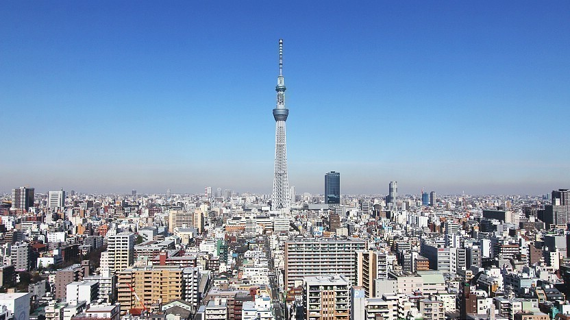

Shibuya Crossing

Senso-ji Temple

Tokyo Skytree
Shibuya Crossing
Senso-ji Temple
Tokyo Skytree
I want to go to Tokyo, Japan, for a vacation. I have wanted to go to Tokyo for a long time because every time I see it in anime or movies, Tokyo is a wonderful place.
Many tourist spots are recommended. Among the most famous is Shibuya Crossing, the world's busiest pedestrian intersection, where hundreds of people cross simultaneously, creating a captivating scene.
nother must-visit is the historic Senso-ji Temple, Tokyo's oldest temple in Asakusa. Visitors can explore the stunning architecture, browse traditional shops along Nakamise Street, and soak in the serene atmosphere.
For panoramic city views, the Tokyo Skytree, the tallest structure in Japan, offers breathtaking vistas, especially at sunset.
Whether modern marvels or ancient sites, Tokyo's diverse attractions make it unforgettable.
Takoyaki
Yakitori
To be honest, I am a food lover.Tokyo is a culinary paradise, celebrated for its diverse and delicious food offerings. The city boasts the highest number of Michelin-starred restaurants in the world, showcasing everything from exquisite sushi and sashimi to flavorful ramen and tempura.
A must-try is the iconic sushi, especially from renowned establishments like Tsukiji Outer Market, where we can savor the freshest seafood. Also the street food such as takoyaki (octopus balls), yakitori (grilled chicken skewers), and sweet mochi desserts.